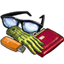
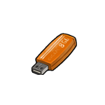
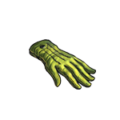
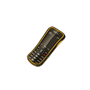
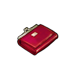

Получено: файл; исходный URL. Иллюстрация «Туристическая коллекция» из каталога ViveR_9, сопоставлена по точному названию; возможны отличия версий. Оригинальный файл без перекодирования; авторство отдельно не установлено. Страница: источник.

Туристическая коллекция
ВКонтакте; дата источника не указана- Тип
- Коллекции
- Версия и дата
- ВКонтакте; дата источника не указана
Элементы коллекции













Данные по источнику · ВКонтакте · дата источника не указана
Предварительно: один источник; требует сверки. Требуется сверка.
- Награда
- Дикая росянка и 250 опыта
- Где копать
- Университет, волшебный кролик, зомбоящик, идолы, цветочный декор
- Состав (источник Zombie-island)
- Флешка; Очки; Перчатка; Мобильник; Кошелёк.
- Награда (источник Zombie-island)
- 1 Росянка дикая; 250 Опыт.
- Где копать Туристическую коллекцию в Зомби Ферме лопатами
- Зомбоящик; Волшебный кролик; Университет; Старт; Марафон 5; Марафон 15; Марафон 25; Марафон 35; Марафон 40; Финиш; Столб раз; Столб два; Ваза; Идол деревянный; Идол раз; Идол два; Фиалки оранжевые; Фиалки красные; Фиалки голубые; Фиалки фиолетовые; Тюльпаны красные; Тюльпаны голубые; Тюльпаны розовые; Тюльпаны белые; Тюльпаны желтые; Лилии красные; Лилии голубые; Лилии розовые; Лилии белые; Лилии желтые.
- Туристическая коллекция выпадает из мешков Кладоискателей и Звездочетов
- Кладоискатель; Кладоискатель с мозгами; Звездочет; Звездочет за зомбаксы.
- Туристическая коллекция есть в Секретных кладах, сокровищах и ценностях
- Секретный клад; Сундук Чудовища; Ледяной дворец; Клубничное; Сюрприз; Пернатый подарок; Коллекционная посылка; Коллекционный; Коллекционер; Халявное.
- Туристическая коллекция попадается на Пиратских островах Зомби Фермы
- Пиратский сундук.
Данные по источнику · ВКонтакте, ZombieS Forever · дата редакции не установлена
Предварительно: Историческая фанатская страница; независимость от других источников не установлена. Возможны различия версий и дат.. Требуется сверка.
- Награда по ZombieS Forever
- Росянка дикая и 250 опыта
- Места получения: выборка из источника
- Университет, Волшебный кролик, Зомбоящик, столб раз, идолы, цветочный декор.
Данные по источнику · браузерная версия; платформа не указана · дата редакции не установлена
Предварительно: Содержимое списка: изображения и колонки могут терять смысл при извлечении текста; отдельная страница и дата не проверены. Подписи alt иногда ошибочны.. Требуется сверка.
- Текст карточки из каталога
- Росянка дикая и 250 опыта Флешка Очки Перчатка Мобильник Кошелёк Где копать: Замок, Университет, Зомбоящик, Пирамида, Бригада Элвиса, Ожившая рука, Рука зомби, Рок-рука, Клоун, Медвежонок, Медвед, Медвезомби, Горгулья, Скамейка Раз, Ваза, идолы
Данные по источнику · Мой Мир (Mail.ru); историческая таблица · дата редакции не установлена
Предварительно: Источник сам использует знаки вопроса; не следует считать такие места подтверждёнными. Возможны изменения патча и платформы; независимость от других справочников не доказана.. Требуется сверка.
- Название в источнике
- Туристическая коллекция
- Где копать
- Университет, Волшебный кролик, Зомбоящик, идолы, цветочный декор
- Награда
- Росянка дикая и 250 опыта
Данные по источнику · браузерная версия; на сайте указана игра ВКонтакте · дата редакции не установлена
Предварительно: Исторический текст; сильно совпадает со справкой Zommbie.at.ua, независимость не доказана. Отрицания и доступность могут измениться с патчем.. Требуется сверка.
- Где искать по странице «Зомбастики»
- Красные лилии, голубые лилии, белые лилии, желтые лилии, зомбоящик, идол раз, идол два.
Данные по источнику · историческая браузерная версия, платформа не указана · 10.01.2014 — дата в каталоге; дата редакции материала неизвестна
Предварительно: Фанатский список без вероятностей и уточнения площадки; независимость от других источников не установлена.. Требуется сверка.
- Где искать по списку сайта
- Красные лилии, голубые лилии, белые лилии, желтые лилии, зомбоящик, идол раз, идол два
- Оговорка
- Список может относиться к разным условиям, инструментам и периодам игры; не доказывает гарантированное выпадение. Заявления «только» и «невозможно» относятся лишь к времени и версии источника.
Данные по источнику · браузерная игра; социальная сеть не указана · 07.04.2015 — дата статьи, дата последующих правок неизвестна
Предварительно: Фанатские статьи могут быть зависимыми. Сопоставлены только указанные факты; выпадение не обязательно гарантировано, цены и доступность могли меняться.. Требуется сверка.
- Кошелёк и награда
- Автор называет кошелёк элементом Туристической коллекции, за обмен которой даются 250 опыта и одна дикая росянка; это совпадает с Zombie-island.
- Источники кошелька
- В статье названы декорации Марафон, столбы, Волшебный кролик и идолы, цветочные клумбы, мешки и некоторые ценности. Вероятности не указаны.
Связанные сущности
нет проверенных связей — требуется сверка.
Источники
- прочитано; проверка 2026-11-21
- прочитано: Zombie-island.moy.su; проверка 2026-11-21
- ZOMBIA: прочитана карточка в списке
- Ссылка на отдельную страницу; отдельно не проверена
- Zombiemail: строка таблицы коллекций; Мой Мир
- Зомбастики: прочитана соответствующая строка; возможная копия другого справочника
- ViveR_9: изображение в каталоге коллекций; совпадение названия
- zommbie.at.ua: где искать коллекции
- FatalGame: отдельно прочитанная статья; выборочная сверка